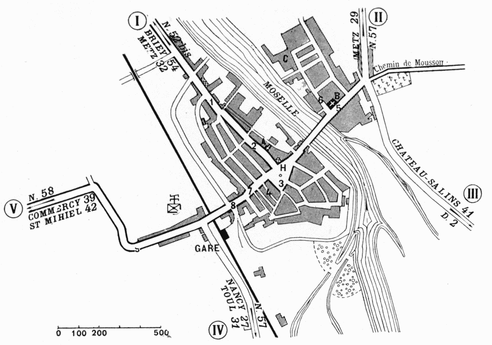

PLAN OF PONT-À-MOUSSON

| Arbitrary Signs | |
| A.—Church of St. Laurent. B.—Church of St. Martin. C.—Lesser Seminary. H.—Hôtel-de-Ville. 1.—Rue du Port. 2.—Rue St. Laurent. |
3.—Place Duroc. 4.—Rue de l’Union. 5.—Rue Gambetta. 6.—Rue St. Martin. 7.—Rue Victor Hugo. 8.—Place Thiers. 9.—Avenue Carnot. |